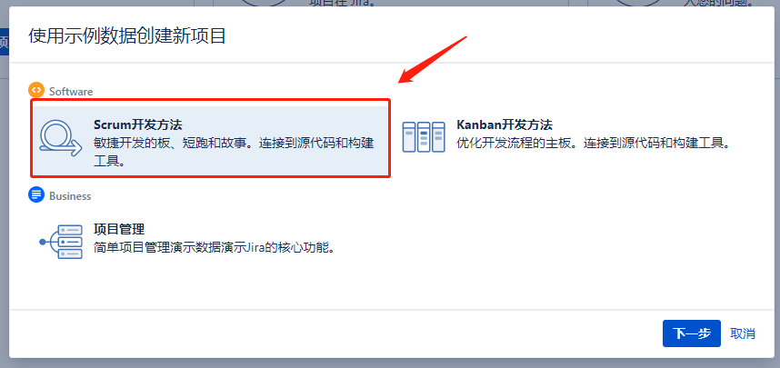

Jira的安装与部署
一、简介
镜像：https://hub.docker.com/r/atlassian/jira-software
第三方镜像：https://hub.docker.com/r/blacklabelops/jira
什么是JIRA?
JIRA 是目前比较流行的基于Java架构的管理系统，由于Atlassian公司对很多开源项目实行免费提供缺陷跟踪服务，因此在开源领域，其认知度比其他的产品要高得多，而且易用性也好一些。同时，开源则是其另一特色，在用户购买其软件的同时，也就将源代码也购置进来，方便做二次开发。JIRA功能全面，界面友好，安装简单，配置灵活，权限管理以及可扩展性方面都十分出色。
JIRA的主要功能
问题追踪和管理：用它管理项目，跟踪任务、bug、需求，通过jira的邮件通知功能进行协作通知，在实际工作中使工作效率提高很多
问题跟进情况的分析报告：可以随时了解问题和项目的进展情况
项目类别管理功能：可以将相关的项目分组管理
组件/模块负责人功能：可以将项目的不同组件/模块指派相应的负责人，来处理所负责的组件的Issues
项目email地址功能：每个项目可以有不同的email（该项目的通知邮件从该地址发出）
无限制的工作流：可以创建多个工作流为不同的项目使用
JIRA的主要特点
JIRA的优点
用它管理项目，跟踪任务、bug，通过JIRA的邮件通知功能进行协作通知，在实际工作中使工作效率提高很多，效果非常不错！安全性、可扩展性方面发挥到了极致！
JIRA不仅仅是一个缺陷跟踪系统，通过Jira，可以整合客户、开发人员、测试人员，各人各司其职，信息很快得到交流和反馈，让大家感到软件开发在顺利快速的进行，朝意想的目标迈进。eclipse和IDEA下的Jira插件，主要为开发人员服务，实时将信息反馈给开发人员，开发人员同时迅速地将修复的结果信息反馈到跟踪系统中，最后通过持续集成，软件迅速地完成了更新，这些方便便捷的操作会极大地鼓舞软件开发中的各方人员，甚至包括客户，及时响应，相信是每一个客户都会欣赏的。
跟同类软件产品TestTracker、ClearQuest、TestDirector相比，JIRA的性价比最好！
JIRA的缺点
对于测试需求、测试用例等都没有提供直接的方式进行管理。不过可以利用JIRA的Issue Type的可定制性,来进行需求和测试用例方面的管理,也可以与Testlink集成。
相关版本
JIRA 4.0版本之后，不再按照功能区分版本。取消了以前的标准版，专业版，企业版之分；取而代之的是按照用户数量来划分：25、50、100、无限制用户。 所有的版本都具有之前企业版的功能！JIRA不限制创建项目数和Issue的数量，购买之后可以永久使用；并且一年内免费更新版本。
二、安装
0. 拉去镜像
docker pull docker.io/atlassian/jira-software:8.2.01. 部署PostgreSQL
省略
2. 创建破解文件的ConfigMap
oc create configmap crack-jar --from-file=atlassian-extras-3.2.jar --from-literal=text=./atlassian-extras-3.2.jar3. 创建其他资源
创建PVC
apiVersion: v1
kind: PersistentVolumeClaim
metadata:
name: jira-data
namespace: jira
spec:
accessModes:
- ReadWriteOnce
resources:
requests:
storage: 10Gi创建ServiceAccount
oc create serviceaccount jira创建RBAC相关资源
4. OKD部署Deployment声明文件
apiVersion: apps.openshift.io/v1
kind: DeploymentConfig
metadata:
labels:
app: jira
name: jira
namespace: jira
spec:
replicas: 1
selector:
app: jira
deploymentconfig: jira
strategy:
type: Recreate
template:
metadata:
labels:
app: jira
deploymentconfig: jira
spec:
containers:
- env:
- name: JVM_MINIMUM_MEMORY
value: 800m
- name: JVM_MAXIMUM_MEMORY
value: 1024m
- name: TZ
value: Asia/Shanghai
image: docker.io/atlassian/jira-software:8.2.0
imagePullPolicy: IfNotPresent
name: jira
ports:
- containerPort: 8080
protocol: TCP
resources:
limits:
cpu: '1'
memory: 1500Mi
requests:
cpu: 500m
memory: 500Mi
readinessProbe:
failureThreshold: 3
initialDelaySeconds: 40
periodSeconds: 30
successThreshold: 1
tcpSocket:
port: 8080
timeoutSeconds: 2
livenessProbe:
failureThreshold: 3
initialDelaySeconds: 40
periodSeconds: 30
successThreshold: 1
tcpSocket:
port: 8080
timeoutSeconds: 1
volumeMounts:
- mountPath: /var/atlassian/application-data/jira
name: jira-data
- mountPath: /opt/atlassian/jira/atlassian-jira/WEB-INF/lib/atlassian-extras-3.2.jar
name: crack-jar
readOnly: true
subPath: atlassian-extras-3.2.jar
dnsPolicy: ClusterFirst
restartPolicy: Always
schedulerName: default-scheduler
securityContext: {}
serviceAccount: jira
serviceAccountName: jira
terminationGracePeriodSeconds: 30
volumes:
- name: jira-data
persistentVolumeClaim:
claimName: jira-data
- configMap:
defaultMode: 420
name: crack-jar
name: crack-jar
5. 创建Service并创建HTTP访问Route
oc expose dc jira --port=8080oc expose service jira --name=jira --port=8080 --hostname=jira.apps.okd311.curiouser.com6. 页面配置
配置页面语言-->选择手动配置
配置数据库

设置应用程序的属性

申请试用License


7. 配置管理员用户

8. 配置SMTP邮箱通知


9. 查看许可证

三、配置LDAP
见链接: Jira接LDAP
四、项目示例
项目类型

创建示例Scrum敏捷项目

项目的发布
五、问题
1.Unable to create and acquire lock file for jira.home directory '/var/atlassian/application-data/jira
解决：删除jira_home目录下的lock文件（.jira-home.lock），是一个隐藏文件，然后重启jira服务即可。
2.Unable to clean the cache directory: /var/atlassian/application-data/jira/plugins/.osgi-plugins/feli
解决：先停止jira服务，然后删除$JIRA_HOME/plugins/.osgi-plugins/felix/，然后启动jira服务即可
3.There is/are [1] thread(s) in total that are monitored by this Valve and may be stuck.
解决方案：等等就好了